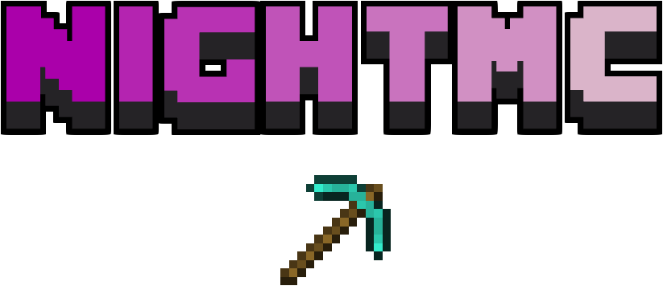

Perks med reel effekt
Få forskellige perks, der giver stat boosts, nye evner og forbedringer, så du kan spille stærkere, smartere og mere effektivt hver eneste dag.
NightMC er en dansk prison-server, hvor du kan kæmpe for frihed, købe unikke perks og få stærkere stats, evner og fordele, der giver dig en reel edge i hvert eneste spilforløb.

Få forskellige perks, der giver stat boosts, nye evner og forbedringer, så du kan spille stærkere, smartere og mere effektivt hver eneste dag.
Byg dig op, arbejd dig op gennem prison-livet, køb dig frem og skab din egen rejse mod prestige, status og større muligheder.
Vores community er aktiv, hjælpsom og fuld af energi. Kom ind, mød andre spillere og få et stærkere fællesskab med hver eneste opgradering.
NightMC er en dansk prison-server lavet til spillere, der vil have mere end bare et normalt Minecraft-serverliv. Her handler det om perks, stats, evner og den lille fordel, der gør hele forskellen i kampen om frihed.
Kom ind i NightMC, vælg dine perks, styrk din karakter og tag kampen om den næste level i det danske prison-univers.
Gå med nu